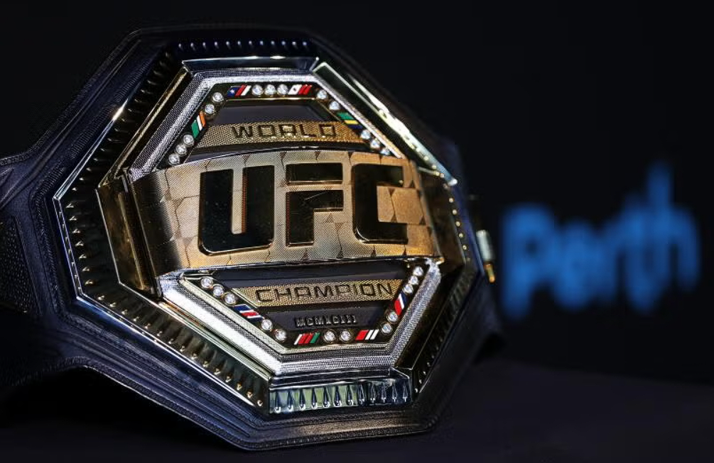
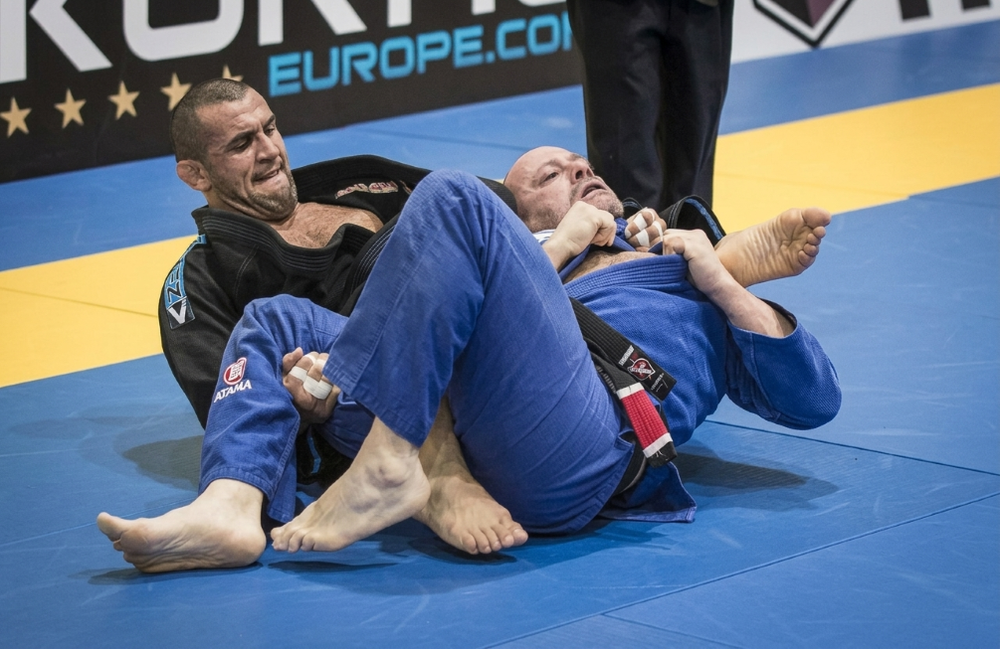
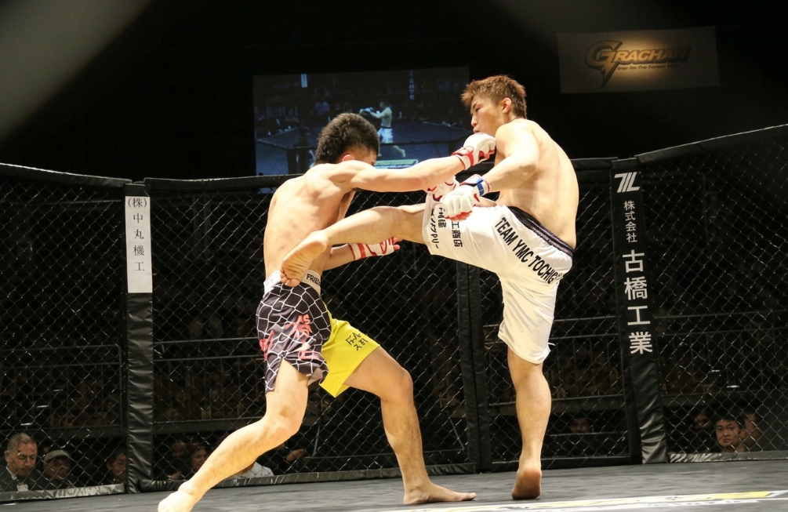
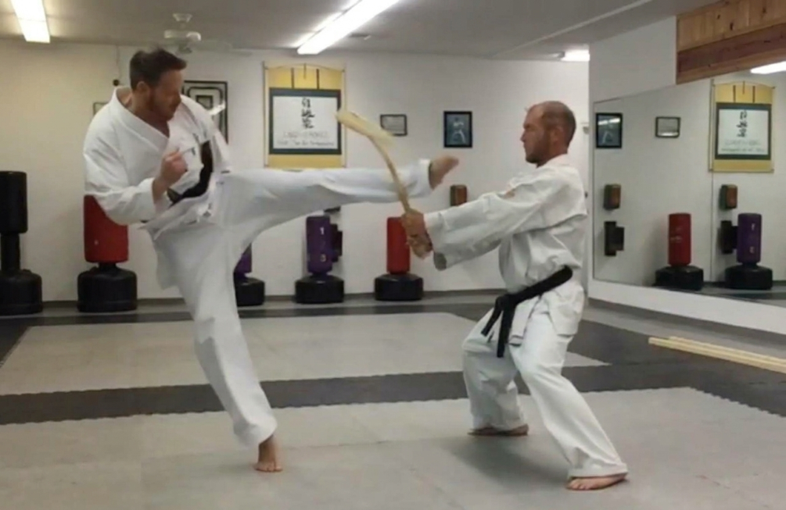

Foco Principal:
O foco principal atualmente é lutar profissionalmente no MMA, contudo preciso além de mais experiência em todas as artes marciais que já pratico também começar em outras:
Jiu Jitsu:
Wrestling/Grappling é um grande foco que um lutador de MMA precisa treinar, pois saber defender quedas ou finalizar o adversário define a vitória diversas vezes, por isso o Jiu Jitsu, pois já conheço uma unidade da Gracie Barra.


MMA:
Para enfim poder competir e saber integrar todos os estilos de forma eficiente é essencial treinamento próprio de MMA, que seria realizado também na unidade Gracie Barra, pois é uma academia de múltiplas modalidades.
Karatê Uechi Ryu:
Karatê é um ótimo estilo mas não seria essencial, entretanto julgo que seria um ótimo aperfeiçoamento do controle de distância e do calejamento de pontos importantes do corpo, tais quais o punho, cotovelo, canela e abdomen.
